Plot tidydiversity results
Source:R/autoplot.R, R/community-tests.R, R/completeness.R
autoplot-tidydiversity.Rdautoplot() methods draw a ggplot for every result type:
Usage
# S3 method for class 'td_rarefy'
autoplot(
object,
x = c("size", "coverage"),
palette = "okabe_ito",
theme = theme_tidydiversity(),
ci = TRUE,
facet = TRUE,
scales = "free_y",
ncol = NULL,
xlab = NULL,
ylab = y_hill,
...
)
# S3 method for class 'td_standardise'
autoplot(
object,
palette = "okabe_ito",
theme = theme_tidydiversity(),
ci = TRUE,
facet = TRUE,
scales = "free_x",
ncol = NULL,
xlab = NULL,
ylab = NULL,
...
)
# S3 method for class 'td_beta_decay'
autoplot(
object,
palette = "okabe_ito",
theme = theme_tidydiversity(),
ci = TRUE,
xlab = "Distance between sites",
ylab = "Dissimilarity",
...
)
# S3 method for class 'td_hill'
autoplot(
object,
gradient = NULL,
palette = "okabe_ito",
theme = theme_tidydiversity(),
facet = TRUE,
scales = "free_y",
ncol = NULL,
xlab = NULL,
ylab = y_hill,
...
)
# S3 method for class 'td_estimate'
autoplot(
object,
palette = "okabe_ito",
theme = theme_tidydiversity(),
ci = TRUE,
facet = TRUE,
scales = "free_x",
ncol = NULL,
xlab = y_hill,
ylab = NULL,
...
)
# S3 method for class 'td_coverage'
autoplot(
object,
palette = "okabe_ito",
theme = theme_tidydiversity(),
xlab = "Sample size",
ylab = "Sample coverage",
labels = TRUE,
...
)
# S3 method for class 'td_beta_pair'
autoplot(
object,
component = c("total", "turnover", "nestedness"),
theme = theme_tidydiversity(grid = "none"),
...
)
# S3 method for class 'td_beta_hill_pair'
autoplot(
object,
component = c("dis_sorensen", "dis_jaccard", "dis_turnover_sorensen",
"dis_turnover_jaccard"),
theme = theme_tidydiversity(grid = "none"),
...
)
# S3 method for class 'td_beta_multi'
autoplot(
object,
palette = "okabe_ito",
theme = theme_tidydiversity(),
xlab = NULL,
ylab = "Multiple-site dissimilarity",
labels = TRUE,
digits = 2,
...
)
# S3 method for class 'td_beta_hill'
autoplot(
object,
what = c("diversity", "dissimilarity"),
palette = "okabe_ito",
theme = theme_tidydiversity(),
ci = TRUE,
xlab = "Order q",
ylab = NULL,
...
)
# S3 method for class 'td_dispersion'
autoplot(object, palette = "okabe_ito", theme = theme_tidydiversity(), ...)
# S3 method for class 'td_completeness'
autoplot(
object,
palette = "okabe_ito",
theme = theme_tidydiversity(),
xlab = "Order q",
ylab = "Sample completeness",
...
)
# S3 method for class 'td_evenness'
autoplot(
object,
palette = "okabe_ito",
theme = theme_tidydiversity(),
xlab = "Order q",
ylab = "Evenness",
...
)Arguments
- object
A tibble returned by one of the functions above.
- x
For curves, plot against sample size (
"size") or sample coverage ("coverage").- palette
Colours for sites or groups:
"okabe_ito"(default),"grey", a character vector of colours, orNULLto keep the ggplot2 default so you can add your own scale.- theme
A ggplot2 theme added to the plot, by default
theme_tidydiversity(). UseNULLto keep the ggplot2 default.- ci
Draw confidence intervals when the result has them.
- facet
For results with several orders
q, facet byq(TRUE, the default) or draw all orders on one panel withqmapped to line type or shape (FALSE). Curves computed with.bygroups are also faceted by group.- scales
Facet scales, passed to
ggplot2::facet_wrap().- ncol
Number of facet columns.
- xlab, ylab
Axis titles. The defaults describe the quantity and, where relevant, its unit.
- ...
Not used.
- gradient
For
div_hill()results, an optional numeric column (such aselevation, kept by.by) to plot diversity along.- labels
For
div_coverage()results, label each point with its site; forbeta_multi()results, print the turnover, nestedness and total values on the bars. Set toFALSEto leave them out.- component
For
beta_pair()results, the component to map to colour:"total","turnover"or"nestedness".- digits
For
beta_multi()results, decimal places of the value labels.- what
For
beta_hill()results,"diversity"(gamma, alpha and beta) or"dissimilarity"(the four normalised dissimilarities).
Details
div_hill(): a Hill diversity profile acrossq, or diversity along a gradient column whengradientis given.div_estimate(): observed and asymptotic diversity with intervals.div_coverage(): sample coverage against sample size, points labelled by site.div_rarefy(): rarefaction and extrapolation curves by sample size or by sample coverage.div_standardise(): standardised diversity with intervals.beta_pair(): a pairwise dissimilarity heatmap.beta_multi(): multi-site turnover and nestedness as stacked bars, labelled with each component and the total.beta_decay(): distance decay of dissimilarity components, with quasibinomial (logit-link) trends that stay within 0 to 1.beta_hill(): gamma, alpha and beta diversity (or, withwhat = "dissimilarity", the four normalised dissimilarities) against the order q for each region, with bootstrap intervals when computed.
Every method returns an ordinary ggplot object, so labels, scales,
themes and facets can be changed afterwards with +, for example
+ labs(x = "Number of workers"), and saved with ggplot2::ggsave().
The defaults use theme_tidydiversity() and the colour-blind-safe
Okabe-Ito palette. Solid lines show rarefaction (interpolation), dashed
lines extrapolation, points the observed sample, and shaded ribbons or
bars the bootstrap confidence intervals when they were computed.
They need the ggplot2 package.
Examples
library(ggplot2)
curves <- div_rarefy(png_ants, q = c(0, 1), .by = season, knots = 20)
autoplot(curves)
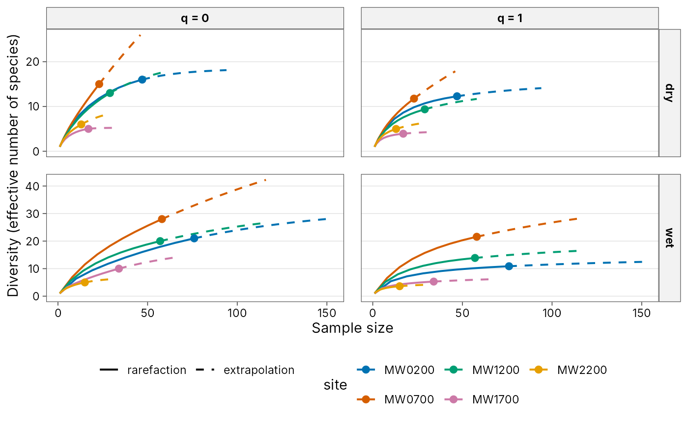
autoplot(curves, x = "coverage")
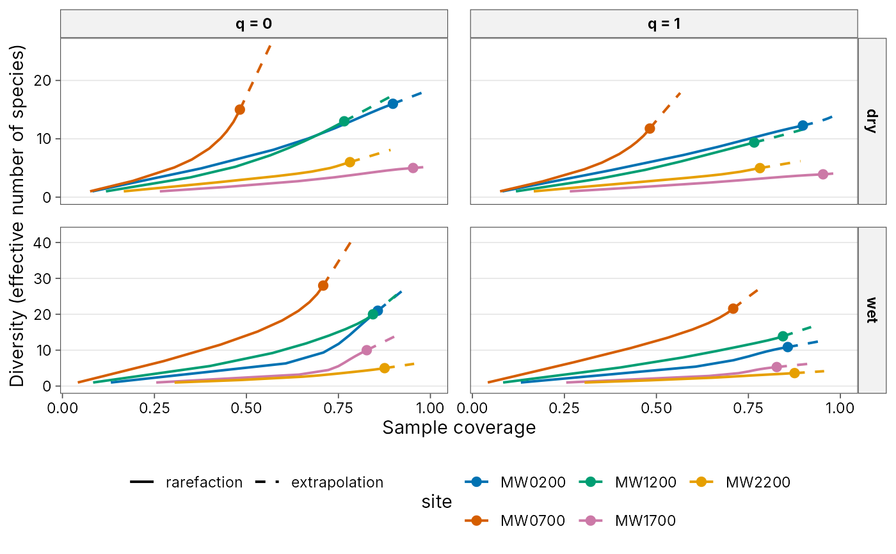
# Customise like any ggplot
autoplot(curves, palette = "grey", ncol = 1) +
labs(x = "Number of workers") +
theme_tidydiversity(base_size = 9)
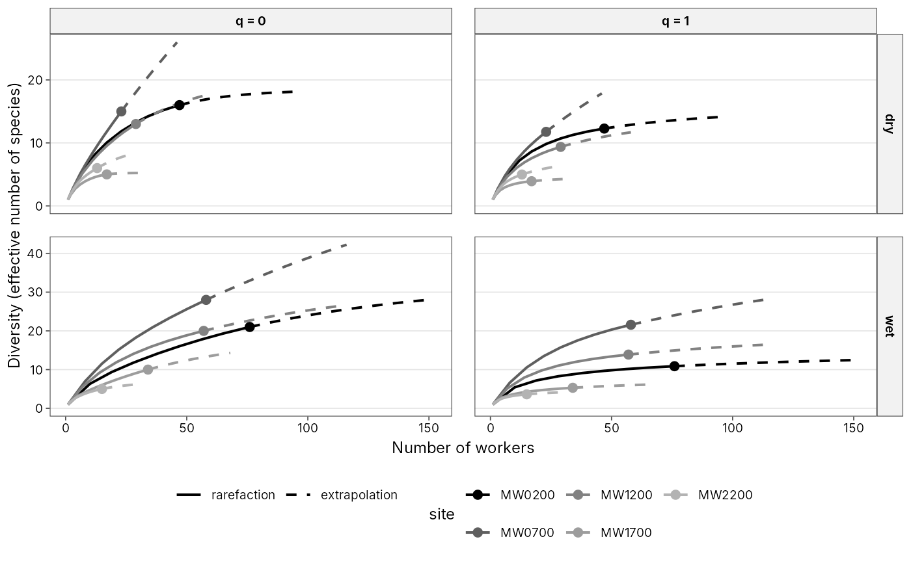
# \donttest{
div_hill(png_ants, q = seq(0, 3, by = 0.25), .by = season) |>
autoplot()
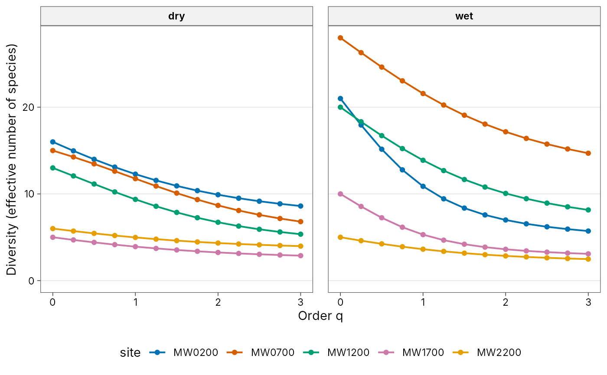
div_hill(png_ants, .by = c(season, elevation)) |>
autoplot(gradient = elevation, xlab = "Elevation (m)")
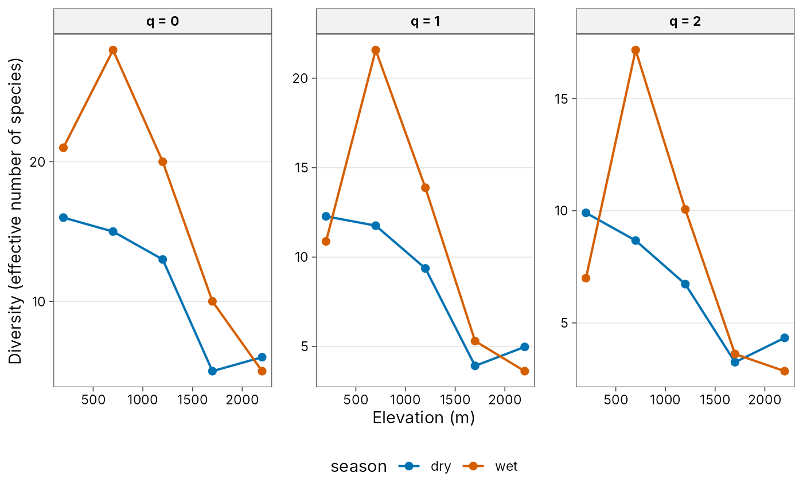
set.seed(1)
autoplot(div_estimate(png_ants, .by = season, nboot = 20))
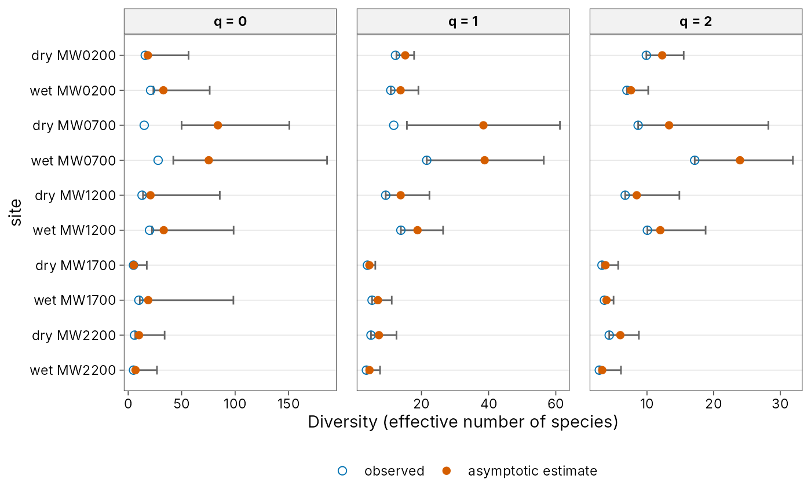
autoplot(div_coverage(png_ants, .by = season))
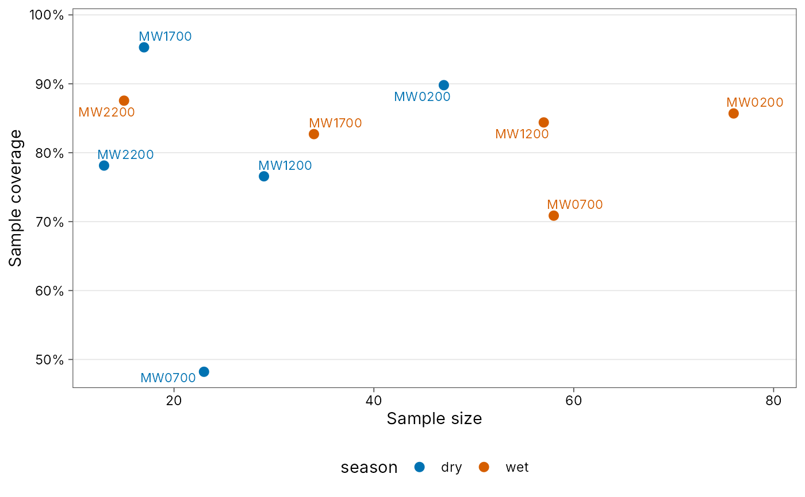
autoplot(div_standardise(png_ants, .by = season, nboot = 20))
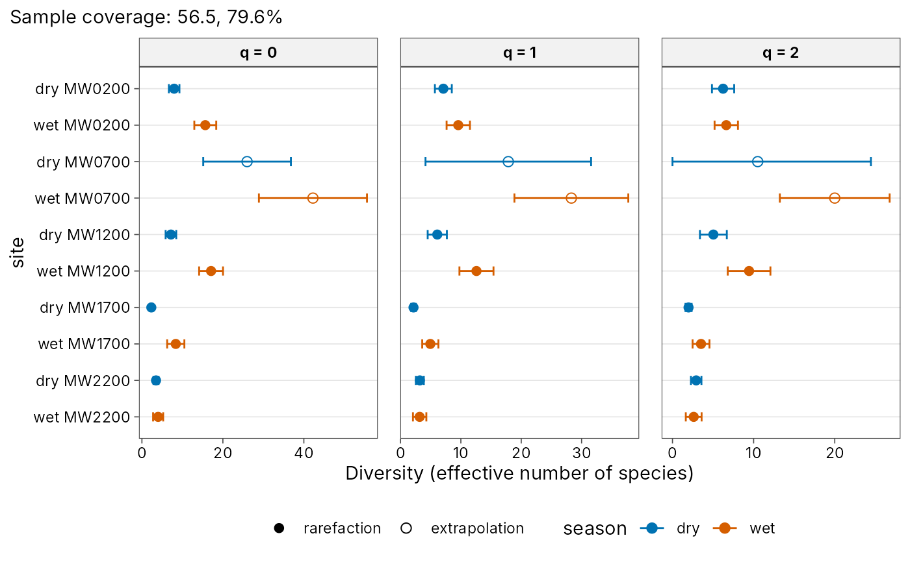
autoplot(beta_pair(png_ants, .by = season))
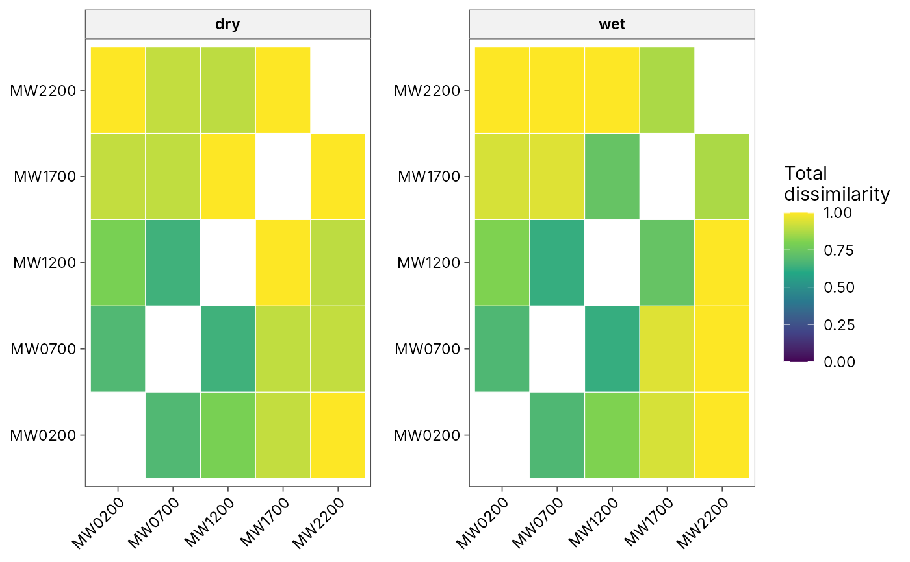
autoplot(beta_multi(png_ants, .by = season))
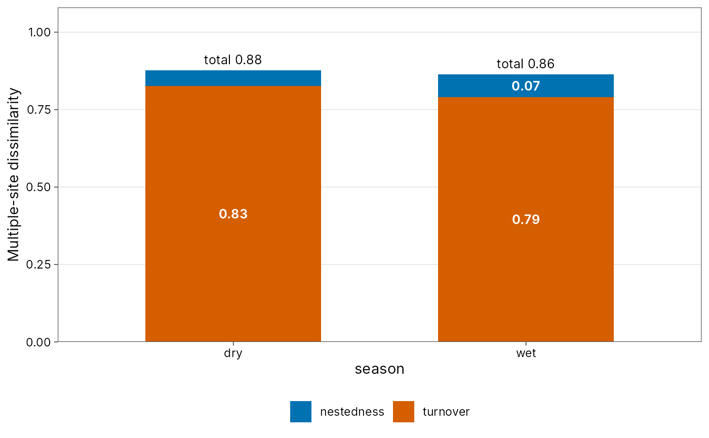
beta_decay(png_ants, gradient = elevation, .by = season) |>
autoplot(xlab = "Difference in elevation (m)")
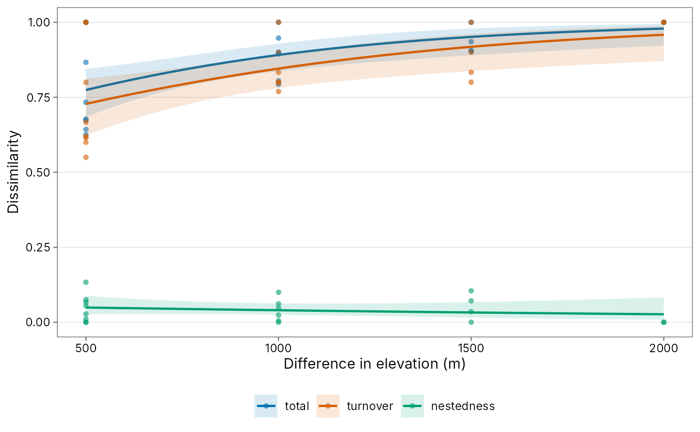
# }